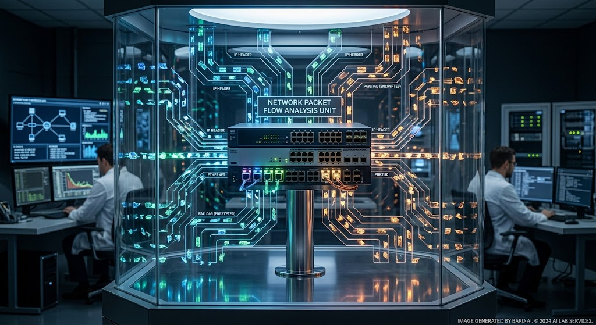

Historical Case: The 2024 Ticketmaster Data Breach
On , cyberhackers gained
unauthorized access to the personal information of customers. This included
phone numbers, email addresses, credit card information, and much more. After
further investigation, the parent company of Ticketmaster
detected fraudulent activity in a third-party database.
was when the company became aware of
the hacker selling customers' data online for a profit--something that could
have been avoided if they would have utilized a
two factor authenticator or encouraging the use of strong
passwords. Because of this, Ticketmaster had to confront their customers and
inform them of this scandal. This data breach is significant because it further
demonstrates the risks of using third-party platforms to store customer data,
rather than their own. While this caused a lot of disruption for the company,
everyone involved learned the importance of implementing prevention strategies,
as this similar incident could happen to anyone.
Types of Malware
Viruses: Software that is written to cause damage.
Trojan Horses: Malware that is viewed as a normal software to trick users into installing it, enabling it to collect valuable information in a short period of time.
Common Hacker Motives
Revenge: Battle between two or more companies to collect as much information that can be used against the company. Most times, this is because of personal conflicts.
Personal Information Theft: Hackers steal data meant to be confidential and improperly use it or sell it to make a profit.
Prevention Strategies
Cybersecurity Training: Educating more people on the modern ways hackers are able to steal information and potential solutions will help more computer-users recognize malicious activity before it causes unsolvable conflict.
Multi-Factor Authentication: Additional step in the verification process to help limit unauthorized users. An example of this is Texas A&M University utilizing the Duo Mobile Platform to provide a unique passcode to Aggies when signing into the Howdy Portal.
Figure 1. Cyber Security Operations Center Managing Network Attacks. Generated by Google Gemini, 20 Oct. 2026.

Figure 2. Network Packet Flow Analysis Unit Displaying Encrypted Data Streams. Generated by Google Gemini, 20 Oct. 2026.